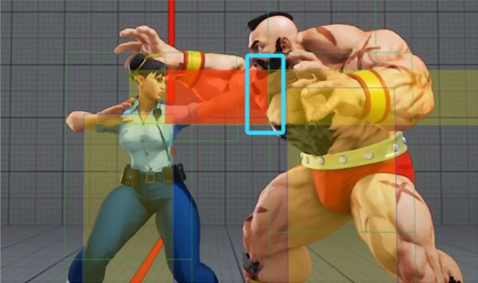

Table of contents |
|---|
| Abstract |
| Introduction |
| First paragraph |
| Second paragraph |
| Third paragraph |
| Conclusion |
| References |
On Earth, would it make sense to sink into the ground when you intend to jump? Probably not. But it might not be impossible in another world, where jumping indeed means that you will sink into the ground. Everything that exists in a simulation must follow a consistent set of physical laws to be deemed as realistic in the environment. What good would it be if everything was out of order?
Each game carries its own appeal which varies upon preference and whether it is conventional to Earth or not but collectively, when we click the download button, we carry expectations for how we believe the game should function. But there’s more to consider – developers don’t just provide players these unique experiences with ease. Many trials and components have been considered before launching the well-known titles players know and love today, with physics playing a key role.
Physics engines are software developed by physicists for game developers, using math and logic to replicate real-world physical behaviour like collisions, movement and trajectory. Utilising real-world effects such as ragdoll physics and forces, game developers have been able to simulate various scenarios for players, propelling the industry to greater heights. The realism of video games has intensified over the years, with developers creating more immersive and dynamic worlds without having to code from scratch. But how exactly has this managed to come into fruition?
When two objects in a video game collide, a certain reaction is elicited. This could be something as mediocre as a player bumping into the wall of a castle, meaning they are restricted from moving any further, or an enemy suffering from burning effects once struck by a fire spell. How does your game manage to seamlessly display these interactions without the player giving it a second thought?
Computer games follow similar processes for each interaction. Chris Hecker (2000) proposes four simple stages for displaying basic physical operations: contact detection, contact resolution, force computation and state integration. Contact detection, otherwise known as collision detection, determines when and how objects in an environment come into contact. Contact resolution is the process by which the physics engine decides the corresponding behaviour for all objects involved in the contact detection stage. Should they bounce back from one another? Should one object pass right through the other? To what degree are the objects affected by the collision? Force computation uses calculations to find the magnitude of the forces affecting the objects. Relevant physical variables are considered at this stage, such as velocity and momentum. Hecker also considers the interaction of force computation with collision detection, whereby objects exert a force on one another to prevent interpenetration when necessary. Finally, state integration implements the calculated forces acting on all the objects involved, rendering the finalised reaction on to the screen via the game’s graphics subsystem .
The addition of a third dimension in video games has come with its trials – namely the issue of consistency. Sincell (1999) presents the idea that systems contain a series of predetermined causes and effects which occur with any given interaction. However, if an interaction exists outside these allowed possibilities, it will not happen at all. Interactions the player has with the environment have evolved since prerecorded animations which were commonly used in 2D games. Therefore, physics engines are unable to predict every possible collision down to the pixel, which often causes errors as many events are unforeseen in code.
Complex objects within a simulation aren’t modelled wholly but are broken down into invisible geometric shapes such as spheres, rectangles or another complex polygon. More often known as ‘hitboxes’, these shapes register collisions between objects, which then triggers a response from the game engine and accordingly - the physics engine. The process is as follows: In a frame, once an overlap or collision is detected between a hitbox and a ‘hurtbox’ (the designated area that registers a hit), an event is triggered, which causes the physics engine to apply the general process mentioned above.
The use of hitboxes has allowed video games to execute enhanced dynamic interactions. However, considerations must be made as the use of complex hitboxes comes at the cost of hardware resources. Therefore, developers must find a stable balance between performance and realism.
Wiltshire (2000) comments on hitboxes existing simultaneously in space and time, creating a reaction which can be anticipated. Understanding hitboxes allows players to master the characteristics of physical laws of objects within a simulation. Hitbox implementation is, however, non-universal and varies between games.

For instance, Street Fighter V simulates ‘strike’ (offensive) hitboxes in red, as shown in the figure above. Hurtboxes are displayed in yellow and change shape depending on the character’s animation. Finally, the blue boxes represent physical positioning and detect contact. These are always active.
Many factors influence how seamlessly a game appears onscreen. A foundational example is simulation frequency. Simply put, this is how often a game or system updates the condition of objects per second, measured in hertz (Hz). The game engine observes these internal states and consequently updates them every ‘simulation tick’, making them crucial for physics accuracy, performance and consistency. A higher frequency leads to smoother, more precise physics, but also increases the load on the GPU/CPU.
There are 2 types of simulation frequency: fixed and variable. Fixed frequency updates at a constant rate whereas variable frequency updates based on the time elapsed since the last frame. Whilst fixed frequencies enable predictable and stable physics to run across games, updates may be skipped if the system lags. Conversely whilst variable frequencies adapt to performance, it can also cause an instability in game physics.
Unity is a game engine released in 2005, popular for its beginner-friendly architecture. One in a series of five articles, “Enhanced physics performance for smooth gameplay” (Unity, no date), unpacks the situation in which performance issues may occur due to abnormal frame preparation times. To avoid this issue, the article instructs users to decrease the ‘maximum allowed timestep ’. This limits the frequency of physics updates to implement smoother frames, at the cost of physics simulation accuracy.
These are fragments of the operations that take place in the creation of video games. Many flaws still present themselves in production, however perfection is subjective. A perfect physics engine does not exist, but many developers continually improve year by year. Physics engines thrive in different aspects of creation, whether it’s balancing the computational limits of hardware, managing real-time constraints or balancing fun and performance with realism. As gaming technology evolves and developers master the components of engines, I believe they will create experiences which go above and beyond expectations that feel intuitive, immersive and fair to players.
Hecker, C. (2000) 'Physics in Computer Games’, New York: Association for Computing Machinery, Communications of the ACM, 2000-07, Vol.43 (7), p.34-39. Available at: Physics in computer games (title only) | Communications of the ACM (Accessed: 11/18/2025). Sincell, M. (1999) ' Physics Meets the Hideous Bog Beast’, Washington: American Society for the Advancement of Science, Science (American Association for the Advancement of Science), 1999-10, Vol.286 (5439), p.398-399. Available at: Physics meets the hideous bog beast - ProQuest (Accessed: 11/18/2025). Wiltshire, A. (2020) 'How hitboxes work, PC Gamer, Issue information, Page reference. Available at: How hitboxes work | PC Gamer (Accessed: 11/18/2025). Unity (no date) ‘Enhanced physics performance for smooth gameplay’. Available at: Enhanced physics performance for smooth gameplay | Unity (Accessed: 11/18/2025).